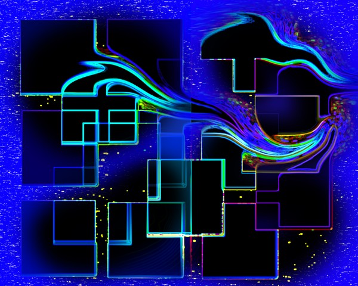
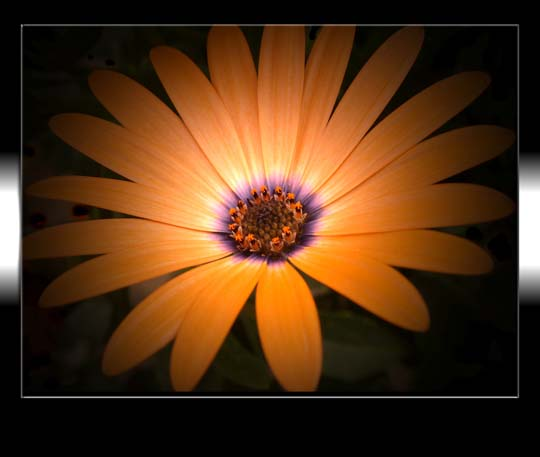
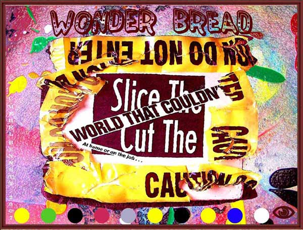
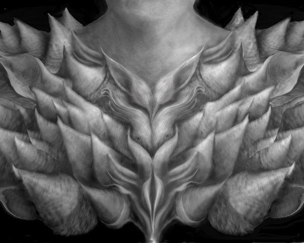
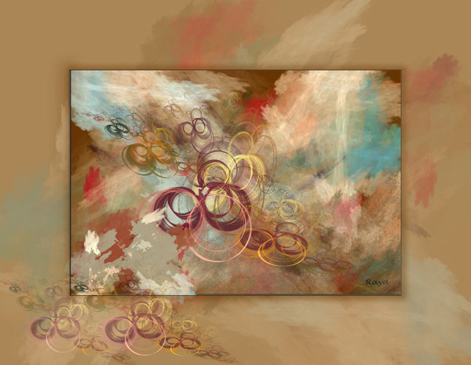
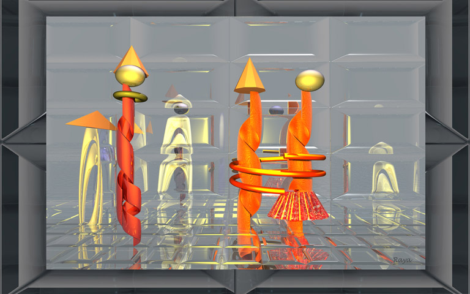
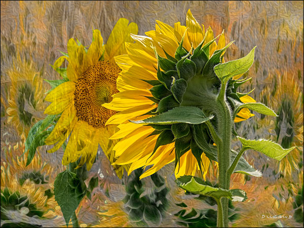

IMAGES OF THE DAY 74
07/11/2023 - 07/20/2023

Drawn Art
Guest Gallery
Rendition
by Phil Slattery
07/11/2023
Click image to access artist's full exhibit
Primitism 
Photo Art
Orange Mirage Framed
by Barb Young
07/12/2023
Click image to access artist's full exhibit
Guest Gallery 
Wonder bread
by C. Mehri Bennett
07/13/2023
Click image to access artist's full exhibit
Guest Gallery 
Collector of Dreams
by Jeanne Sturdevant
07/14/2023
Click image to access artist's full exhibit
Donnie 2017 
Abstract
by Raya Grinberg
07/015/2023
Click image to access Donnie 2017 full exhibit
Donnie 2020 
Handcuffs
by Raya Grinberg
07/016/2023
Click image to access Donnie 2020 full exhibit
Drawn from Memory
The River Shepherds
by Michael Frank
07/17/2023
Click image to access artist's full exhibit

Photo Composting
In the Shed
by Dave Actton
07/18/2023
Click image to access artist's full exhibit

Guest Gallery
Original Sin
by Ryan Hartsell
07/19/2023
Click image to access artist's full exhibit
Director's Choice 
Donnie 2015
Sunflower's Dream
by Celia Durand
07/20/2023
Click image to access Donnie 2015 full exhibit
BACK TO IMAGES OF THE DAY 74
NEXT